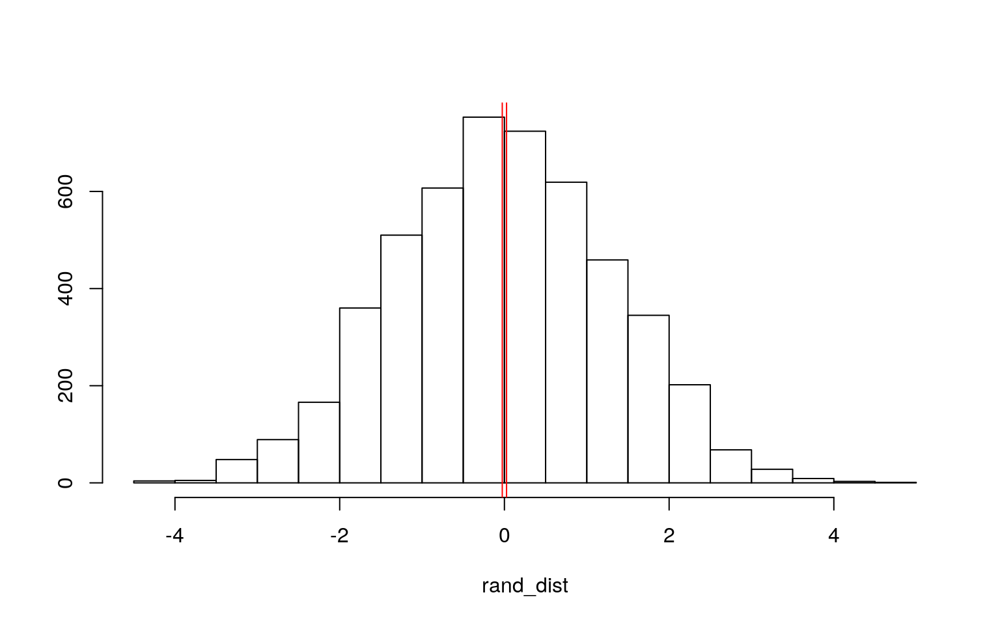
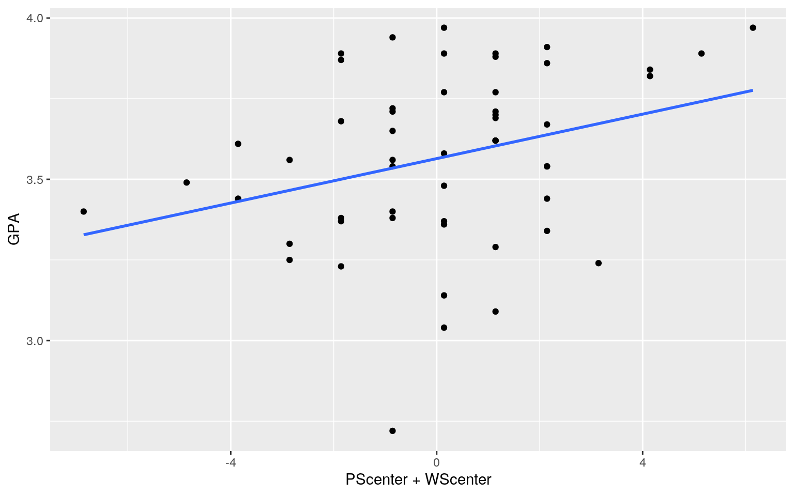
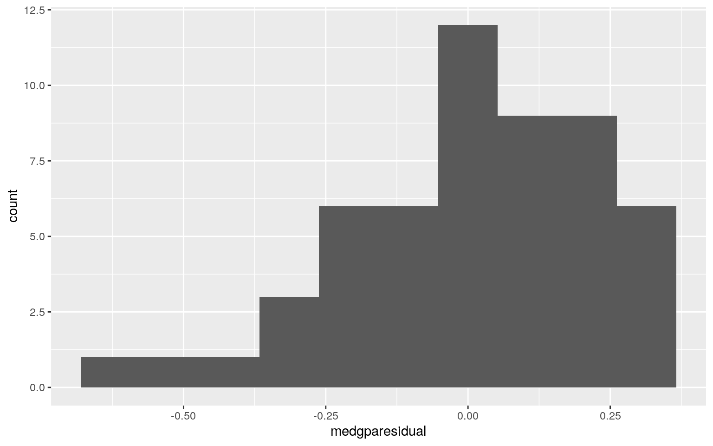
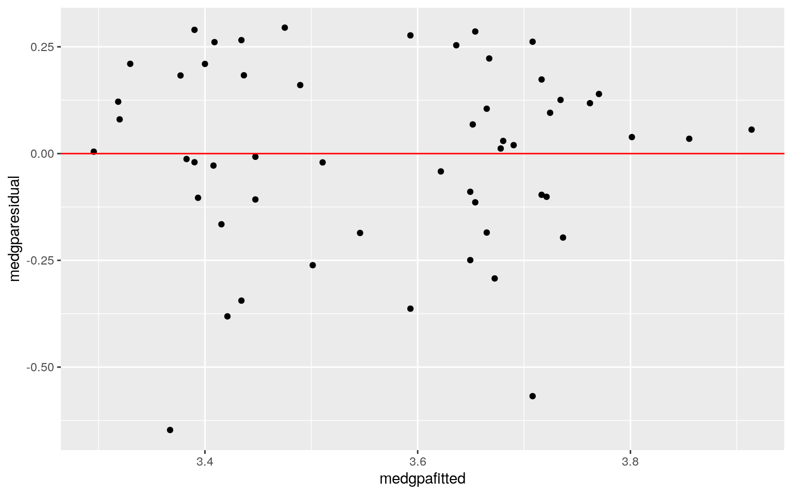
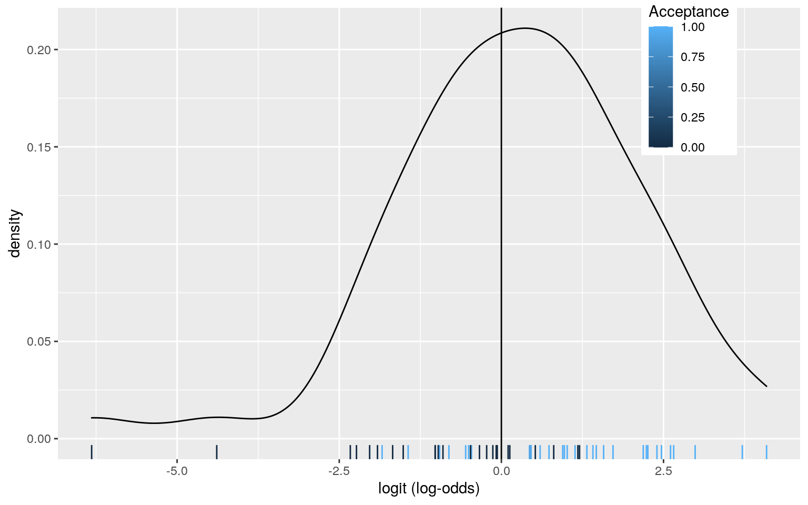
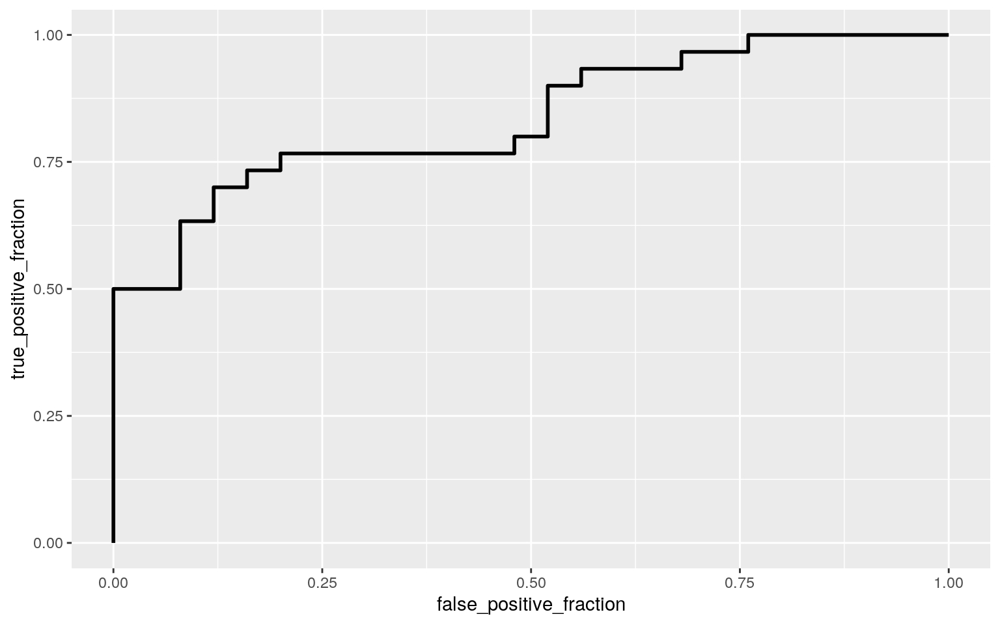

This dataset has information gathered on 55 medical school applicants from a liberal arts college in the Midwest. The dataset looks at medical school admission status and information on GPA and standardized test scores. The first variable is labelled “Accept,” it is a binary categorical variable with “A” indicating the applicant was admitted and “D” indicating the applicant was denied admission. The variable “Sex” is also binary, with “F” representing the applicant is female, and “M” representing male. The variable “BCMP” is a numeric variable that provides the applicants Bio/Chem/Physics/Math grade point average. GPA is another numeric variable that provides overall GPA of the applicant. “VR” (verbal reasoning), “PS” (physical science), “WS” (writing sample), and “BS” (biological sciences) are 4 seperate variables that represent the subscores/sections of the MCAT. They are all numeric and the four subscores add up to make the total MCAT score. The variable “MCAT” is the MCAT (Medical College Admissions Test) score of the applicant. “Apps” represents the number of medical schools the applicant applied to. There are 55 observations in this dataset. I predict that those with higher MCAT scores are more likely to be admitted to medical schools.
medgpa <- read_csv("MedGPA.csv")
manova1 <- manova(cbind( BCPM, GPA, VR, PS, WS, BS, MCAT)~Accept, data=medgpa)
summary(manova1, tol=0)## Df Pillai approx F num Df den Df Pr(>F)
## Accept 1 0.41624 4.6857 7 46 0.0004985 ***
## Residuals 52
## ---
## Signif. codes: 0 '***' 0.001 '**' 0.01 '*' 0.05 '.' 0.1
' ' 1# MANOVA is significant (0.0004985***) -> run univariate ANOVA
summary(aov(manova1))## Response BCPM :
## Df Sum Sq Mean Sq F value Pr(>F)
## Accept 1 1.3925 1.39249 16.403 0.0001712 ***
## Residuals 52 4.4144 0.08489
## ---
## Signif. codes: 0 '***' 0.001 '**' 0.01 '*' 0.05 '.' 0.1
' ' 1
##
## Response GPA :
## Df Sum Sq Mean Sq F value Pr(>F)
## Accept 1 1.0735 1.07352 20.083 4.101e-05 ***
## Residuals 52 2.7796 0.05345
## ---
## Signif. codes: 0 '***' 0.001 '**' 0.01 '*' 0.05 '.' 0.1
' ' 1
##
## Response VR :
## Df Sum Sq Mean Sq F value Pr(>F)
## Accept 1 5.49 5.4898 1.7993 0.1856
## Residuals 52 158.66 3.0511
##
## Response PS :
## Df Sum Sq Mean Sq F value Pr(>F)
## Accept 1 21.959 21.9593 10.692 0.001912 **
## Residuals 52 106.800 2.0538
## ---
## Signif. codes: 0 '***' 0.001 '**' 0.01 '*' 0.05 '.' 0.1
' ' 1
##
## Response WS :
## Df Sum Sq Mean Sq F value Pr(>F)
## Accept 1 0.89 0.88981 0.3404 0.5621
## Residuals 52 135.93 2.61394
##
## Response BS :
## Df Sum Sq Mean Sq F value Pr(>F)
## Accept 1 34.490 34.490 22.898 1.453e-05 ***
## Residuals 52 78.325 1.506
## ---
## Signif. codes: 0 '***' 0.001 '**' 0.01 '*' 0.05 '.' 0.1
' ' 1
##
## Response MCAT :
## Df Sum Sq Mean Sq F value Pr(>F)
## Accept 1 143.01 143.008 9.6599 0.003051 **
## Residuals 52 769.83 14.804
## ---
## Signif. codes: 0 '***' 0.001 '**' 0.01 '*' 0.05 '.' 0.1
' ' 1
##
## 1 observation deleted due to missingness# BCPM, GPA, PS, BS, AND MCAT are significant.
pairwise.t.test(medgpa$BCPM, medgpa$Accept, p.adj="none")##
## Pairwise comparisons using t tests with pooled SD
##
## data: medgpa$BCPM and medgpa$Accept
##
## A
## D 8.2e-05
##
## P value adjustment method: nonepairwise.t.test(medgpa$GPA, medgpa$Accept, p.adj="none")##
## Pairwise comparisons using t tests with pooled SD
##
## data: medgpa$GPA and medgpa$Accept
##
## A
## D 2e-05
##
## P value adjustment method: nonepairwise.t.test(medgpa$VR, medgpa$Accept, p.adj="none")##
## Pairwise comparisons using t tests with pooled SD
##
## data: medgpa$VR and medgpa$Accept
##
## A
## D 0.13
##
## P value adjustment method: nonepairwise.t.test(medgpa$PS, medgpa$Accept, p.adj="none")##
## Pairwise comparisons using t tests with pooled SD
##
## data: medgpa$PS and medgpa$Accept
##
## A
## D 0.00092
##
## P value adjustment method: nonepairwise.t.test(medgpa$WS, medgpa$Accept, p.adj="none")##
## Pairwise comparisons using t tests with pooled SD
##
## data: medgpa$WS and medgpa$Accept
##
## A
## D 0.56
##
## P value adjustment method: nonepairwise.t.test(medgpa$BS, medgpa$Accept, p.adj="none")##
## Pairwise comparisons using t tests with pooled SD
##
## data: medgpa$BS and medgpa$Accept
##
## A
## D 7e-06
##
## P value adjustment method: nonepairwise.t.test(medgpa$MCAT, medgpa$Accept, p.adj="none")##
## Pairwise comparisons using t tests with pooled SD
##
## data: medgpa$MCAT and medgpa$Accept
##
## A
## D 0.0018
##
## P value adjustment method: none# Type 1 Error Probability
1-(.95^22)## [1] 0.6764665# Bonferroni
0.05/22 ## [1] 0.002272727One MANOVA test, 7 ANOVA tests, and 14 t-tests were run. This means 22 total tests were performed, making alpha equal to .05/22= 0.00227. The probability of a type one error is 0.67. Two variables were not significant, VR (0.13) and WS (0.56), meaning there is no mean difference in group for these variables. The remaining variables were significant, even with the adjusted alpha. Since not much background is provided on this data set, some of they assumptions are unclear as to if they are met. For example the assumption of random sampling: this data may have been gathered via survey which makes it not random. Since each group in the dataset has n= 25+, I think the multivariate normality assumption was met. I am not certain if the remainder of assumptions are met here.
medgpa%>%group_by(Sex)%>%
summarize(means=mean(MCAT))%>%summarize(`mean_diff:`=diff(means))## # A tibble: 1 x 1
## `mean_diff:`
## <dbl>
## 1 -0.0265rand_dist<-vector()
for(i in 1:5000){
new<-data.frame(MCAT=sample(medgpa$MCAT),Sex=medgpa$Sex)
rand_dist[i]<-mean(new[new$Sex=="M",]$MCAT)-
mean(new[new$Sex=="F",]$MCAT)
}
{hist(rand_dist,main="",ylab=""); abline(v = c(-0.026 , 0.026),col="red")}
mean(rand_dist> 0.02645503 | rand_dist < -0.02645503)## [1] 0.983Here, I looked at mean differences. My null hypothesis was that sex (male/female) had no association with significant mean difference in MCAT scores, my alternative was that sex had association with different MCAT score outcomes. Since my p-value here is 0.97 I am not able to reject the null hypothesis.
center_scale <- function(x) {
scale(x, scale = FALSE)
}
medgpa$PScenter <- center_scale(medgpa$PS)
medgpa$WScenter <- center_scale(medgpa$WS)
medgpa$BScenter <- center_scale(medgpa$BS)
fit1<-lm(GPA~Accept+PScenter+WScenter+BScenter, data=medgpa)
summary(fit1)##
## Call:
## lm(formula = GPA ~ Accept + PScenter + WScenter +
BScenter, data = medgpa)
##
## Residuals:
## Min 1Q Median 3Q Max
## -0.64724 -0.10645 0.02472 0.17026 0.29493
##
## Coefficients:
## Estimate Std. Error t value Pr(>|t|)
## (Intercept) 3.65447 0.04715 77.504 <2e-16 ***
## AcceptD -0.20530 0.07723 -2.658 0.0106 *
## PScenter 0.01314 0.02431 0.540 0.5914
## WScenter 0.01548 0.02011 0.770 0.4452
## BScenter 0.04078 0.02847 1.432 0.1584
## ---
## Signif. codes: 0 '***' 0.001 '**' 0.01 '*' 0.05 '.' 0.1
' ' 1
##
## Residual standard error: 0.2267 on 49 degrees of freedom
## (1 observation deleted due to missingness)
## Multiple R-squared: 0.3463, Adjusted R-squared: 0.2929
## F-statistic: 6.488 on 4 and 49 DF, p-value: 0.0002847medgpa%>%ggplot(aes(PScenter+WScenter,GPA))+geom_point()+geom_smooth(method = 'lm',se=F)
library(sandwich); library(lmtest)
medgparesidual<-lm(GPA~Accept+PScenter+WScenter+BScenter, data=medgpa)$residuals
ggplot()+geom_histogram(aes(medgparesidual),bins=10)
medgpafitted<-lm(GPA~Accept+PScenter+WScenter+BScenter, data=medgpa)$fitted.values
ggplot()+geom_point(aes(medgpafitted,medgparesidual))+geom_hline(yintercept=0, color='red') For the first linear regression, PS scores explain about 1.3 percent of variation in GPA, WS scores explain 1.5 percent of variation in GPA, and BS scores explain about 4.1 percent of variation in GPA. Here, I am looking at GPA as a response since there subsection scores of the MCAT show proficiency, and thus could be indicators/predictors of the test taker’s personal GPA. According to the histogram, it does not appear that normality was met. Looking at the residual vs. fitted, it looks as though linearity and homoskedsaticity assumptions have been met.
class_diag<-function(probs,truth){
if(is.numeric(truth)==FALSE & is.logical(truth)==FALSE) truth<-as.numeric(truth)-1
tab<-table(factor(probs>.5,levels=c("FALSE","TRUE")),truth)
prediction<-ifelse(probs>.5,1,0)
acc=mean(truth==prediction)
sens=mean(prediction[truth==1]==1)
spec=mean(prediction[truth==0]==0)
ppv=mean(truth[prediction==1]==1)
f1=2*(sens*ppv)/(sens+ppv)
ord<-order(probs, decreasing=TRUE)
probs <- probs[ord]; truth <- truth[ord]
TPR=cumsum(truth)/max(1,sum(truth))
FPR=cumsum(!truth)/max(1,sum(!truth))
dup<-c(probs[-1]>=probs[-length(probs)], FALSE)
TPR<-c(0,TPR[!dup],1); FPR<-c(0,FPR[!dup],1)
n <- length(TPR)
auc<- sum( ((TPR[-1]+TPR[-n])/2) * (FPR[-1]-FPR[-n]) )
data.frame(acc,sens,spec,ppv,auc)
}
head(medgpa)## # A tibble: 6 x 15
## X1 Accept Acceptance Sex BCPM GPA VR PS WS BS MCAT Apps
PScenter[,1]
## <dbl> <chr> <dbl> <chr> <dbl> <dbl> <dbl> <dbl> <dbl>
<dbl> <dbl> <dbl> <dbl>
## 1 1 D 0 F 3.59 3.62 11 9 9 9 38 5 -0.709
## 2 2 A 1 M 3.75 3.84 12 13 8 12 45 3 3.29
## 3 3 A 1 F 3.24 3.23 9 10 5 9 33 19 0.291
## 4 4 A 1 F 3.74 3.69 12 11 7 10 40 5 1.29
## 5 5 A 1 F 3.53 3.38 9 11 4 11 35 11 1.29
## 6 6 A 1 M 3.59 3.72 10 9 7 10 36 5 -0.709
## # … with 2 more variables: WScenter[,1] <dbl>,
BScenter[,1] <dbl>fit2 <- glm(Acceptance~GPA+MCAT, data=medgpa, family="binomial")
summary(fit2)##
## Call:
## glm(formula = Acceptance ~ GPA + MCAT, family =
"binomial", data = medgpa)
##
## Deviance Residuals:
## Min 1Q Median 3Q Max
## -1.7132 -0.8132 0.3136 0.7663 1.9933
##
## Coefficients:
## Estimate Std. Error z value Pr(>|z|)
## (Intercept) -22.3727 6.4538 -3.467 0.000527 ***
## GPA 4.6765 1.6416 2.849 0.004389 **
## MCAT 0.1645 0.1032 1.595 0.110786
## ---
## Signif. codes: 0 '***' 0.001 '**' 0.01 '*' 0.05 '.' 0.1
' ' 1
##
## (Dispersion parameter for binomial family taken to be 1)
##
## Null deviance: 75.791 on 54 degrees of freedom
## Residual deviance: 54.014 on 52 degrees of freedom
## AIC: 60.014
##
## Number of Fisher Scoring iterations: 5exp(coef(fit2)) %>% round(3)## (Intercept) GPA MCAT
## 0.000 107.389 1.179probs <- predict(fit2, type="response")
class_diag(probs,medgpa$Acceptance)## acc sens spec ppv auc
## 1 0.7454545 0.7666667 0.72 0.7666667 0.8346667table(predict=as.numeric(probs>.5),truth=medgpa$Acceptance)%>%addmargins## truth
## predict 0 1 Sum
## 0 18 7 25
## 1 7 23 30
## Sum 25 30 55medgpa$logit<-predict(fit2,type="link")
medgpa%>%ggplot()+geom_density(aes(logit,color=Acceptance,fill=Acceptance), alpha=.4)+
theme(legend.position=c(.85,.85))+geom_vline(xintercept=0)+xlab("logit (log-odds)")+
geom_rug(aes(logit,color=Acceptance))
library(plotROC)
ROCplot<-ggplot(medgpa)+geom_roc(aes(d=Acceptance,m=probs), n.cuts=0)
ROCplot
calc_auc(ROCplot)## PANEL group AUC
## 1 1 -1 0.8346667The coefficient of 0.004389 suggests that GPA interacts with the binary category of acceptance (1= accept, 0= denied). The AUC is 0.83, suggesting the model moderately fits and predicts the given data. Accuracy is 0.74, sensitivity is 0.76, specificity is 0.72, and precision is 0.77 (these are worse than AUC value and weaken the fit).
Note that the echo = FALSE parameter was added to the code chunk to prevent printing of the R code that generated the plot.